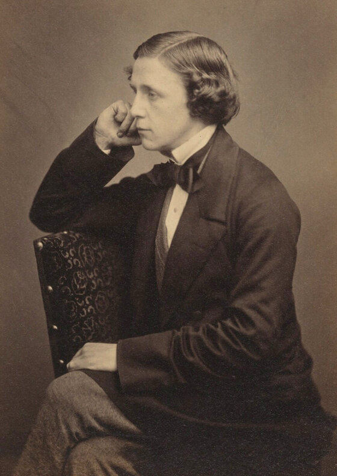
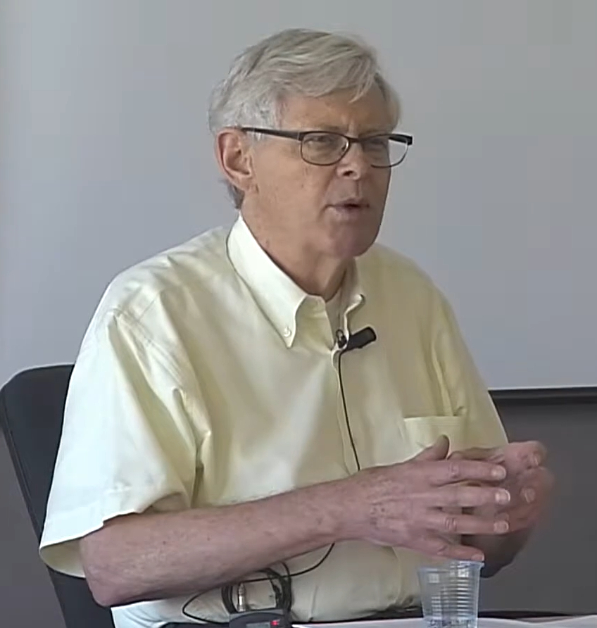
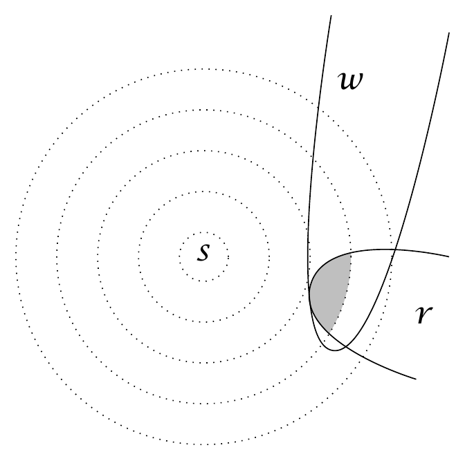

∀

Trinity College Dublin
Coláiste na Tríonóide, Baile Átha Cliath
The University of Dublin
LIU33008 · Semantics II
Week 9
Conditionals
Dr. Thomas Stephen
School of Linguistic, Speech & Communication Sciences
Semester 1 · Michaelmas
Concepts and skills
Concepts
- Truth-functional connectives; the material conditional and its paradoxes.
- Indicative, counterfactual and biscuit conditionals; the if-clause as topic.
- The strict and the variably strict conditional; Sobel sequences.
- Similarity orderings; closest antecedent worlds; failures of strengthening, transitivity and contraposition.
- The selection function; conditional excluded middle; would and might counterfactuals.
- The restrictor analysis; tripartite structures; covert operators; ordering sources.
- Iterated counterfactuals; yo-yo conditionals.
Skills
- Give the truth table of the material conditional and test an inference with it.
- Classify a conditional as indicative, counterfactual, biscuit, concessive or anankastic.
- Evaluate a conditional under the material, strict and closest-worlds analyses.
- Draw a sphere model where strengthening, transitivity or contraposition fails.
- Decide a would and might pair under Stalnaker and under Lewis.
- Compute the restrictor analysis of a conditional, and best worlds from an ordering source.
- Show that the closest-worlds analysis can make a yo-yo conditional true.
Today
Empirical
- Wason’s cards
- Truth functions
- The material conditional
- Difficult cases for the material conditional
- Indicatives and counterfactuals
- Kinds of conditional
- Modals under if
- Strengthening the antecedent
- Transitivity and contraposition
Historical
- Ancient logic
- Lewis Carroll
- Ramsey and Stalnaker
- David Lewis
- Lewis and Kratzer
Formal
- If as a strict conditional
- Kratzer’s thesis
- Covert operators
- The Lockhart model
- The ordering source
- Bizet and Verdi
- Yo-yo conditionals
- Other notations
Typological
- Conditionals are topics
- Clause order
- Marking the protasis
This week
Readings
von Fintel & Heim, Intensional Semantics, ch. 4 “Conditionals” and §5.4 “Non-monotonicity of conditionals”. Textbook
Stalnaker (1968), “A theory of conditionals”, in Rescher (ed.), Studies in Logical Theory. Classical
Lewis (1973), Counterfactuals, §§1.1–1.6. Classical
Kratzer (1986), “Conditionals”, Chicago Linguistic Society 22. Classical
von Fintel (2011), “Conditionals”, in von Heusinger, Maienborn & Portner (eds.), Semantics, vol. 2. Contemporary
von Fintel & Gillies (2026), “Yo-yo conditionals and counterfactual suppositions”, handout, UT Austin. Contemporary
I
Empirical
LENS 01 / 04 · LIU33008 · Week 9
Conditionals
Truth functions, the material conditional and the problems for a truth-functional if.
Wason’s cards
Four cards lie on a table. Each has a letter on one side and a number on the other.
(1)
If a card has a vowel on one side, then it has an even number on the other side.
E
K
4
7
Empirical
Wason’s cards
Wason (1968): the rule (1) is false only of a card with a vowel on one side and an odd number on the other, so the cards to turn are E and 7. Few participants choose those two cards.
Griggs & Cox (1982) gave the rule If a person is drinking beer, then the person must be over 19, with cards for drinks and ages. About three quarters of their participants turned drinking beer and 16 years old.
Cheng & Holyoak (1985): people are more likely to guess correctly when concerning rules of permission and obligation, like the drinking rule with its modal must.
Wason (1968), “Reasoning about a rule”, Quarterly Journal of Experimental Psychology 20; Johnson-Laird & Wason (1970), Cognitive Psychology 1, pooled results as reported by Oaksford & Chater (1994), Psychological Review 101; Griggs & Cox (1982), British Journal of Psychology 73; Cheng & Holyoak (1985), Cognitive Psychology 17.
Empirical
Truth functions
| \(A\) | \(C\) | \(\neg A\) | \(A \wedge C\) | \(A \vee C\) | \(A \rightarrow C\) | |
|---|---|---|---|---|---|---|
| (a) | T | T | F | T | T | T |
| (b) | T | F | F | F | T | F |
| (c) | F | T | T | F | T | T |
| (d) | F | F | T | F | F | T |
Truth-functional connective: the truth value of the whole is fixed by the truth values of the parts. Anna is home and the lights are on is true iff both parts are true, whatever they are about.
Validity: an inference is valid iff no row makes all its premises true and its conclusion false. Modus ponens, from \(A \rightarrow C\) and \(A\) to \(C\), is valid, since only row (a) makes both premises true.
Gamut (1991), Logic, Language, and Meaning, vol. 1, ch. 2.
The material conditional
Before her exam, Anna’s father tells her:
(2)
If you pass the exam, I will take you out for dinner.
(a)
Anna passes, and they go out for dinner.
(b)
Anna passes, and they stay at home.
(c)
Anna fails, and they go out for dinner anyway.
(d)
Anna fails, and they stay at home.
Empirical
The material conditional
| pass \((A)\) | dinner \((C)\) | \(A \rightarrow C\) | promise | |
|---|---|---|---|---|
| (a) | T | T | T | kept |
| (b) | T | F | F | broken |
| (c) | F | T | T | not tested |
| (d) | F | F | T | not tested |
Material conditional: \(A \rightarrow C\) is false when \(A\) is true and \(C\) is false, and true otherwise. (2) is false only in (b), where the promise is broken.
False antecedent: in (c) and (d) Anna fails, so the promise is never tested, and the material conditional counts (2) as true, since nothing has made it false.
Philo of Megara gave this truth table around 300 BC, and it is the only one available if if is a truth function.
Gamut (1991), Logic, Language, and Meaning, vol. 1, ch. 2; Sextus Empiricus, Outlines of Pyrrhonism II.
Difficult cases for the material conditional
(3)
If Dublin is in France, then 2 + 2 = 5.
(4)
If the moon is made of cheese, then Paris is in France.
(5)
If I am the Pope, I am Irish.
(6)
If I am the Pope, I am not Irish.
(7)
If that’s a Picasso, I’m a monkey’s uncle.
(8)
Either if it rains the match is off, or if the match is off it rains.
(9)
It is not true that if there is a major earthquake in Cambridge tomorrow, my house will collapse.
Empirical
Difficult cases for the material conditional
False antecedent: (3), (5) and (6) come out true, since their antecedents are false. So if A, C and if A, not C are compatible, and true together exactly when \(A\) is false.
True consequent: (4) comes out true because Paris is in France. (8) is a tautology, since \((A \rightarrow C) \vee (C \rightarrow A)\) is true in every row.
Denial: (9) comes out equivalent to There will be a major earthquake in Cambridge tomorrow, and my house will not collapse (von Fintel & Heim 2011).
Dutchman conditionals: (7) has an absurd consequent and conveys that its antecedent is false, by modus tollens. Here the material reading gives the right result.
Grice (1989) and Jackson (1979) keep the material conditional and explain why (3) and (4) sound odd by what a speaker can properly assert.
von Fintel & Heim (2011), Intensional Semantics, §4.1; Grice (1989), “Indicative conditionals”, in Studies in the Way of Words; Jackson (1979), “On assertion and indicative conditionals”, Philosophical Review 88.
Empirical
Indicatives and counterfactuals
(10)If Oswald did not kill Kennedy, someone else did.
(11)If Oswald had not killed Kennedy, someone else would have.
Adams (1970): Lee Harvey Oswald shot President Kennedy in Dallas in 1963. (10) is true, since someone killed Kennedy, and (11) is doubtful or false, though the two differ only in their verb forms.
Indicative conditional: a conditional like (10), with ordinary tense in both clauses, read against what is known. The if-clause is the antecedent or protasis, and the main clause the consequent or apodosis.
Counterfactual conditional: a conditional like (11), with past morphology in the antecedent and would in the consequent, read against an antecedent taken to be false.
Not truth-functional: If the match had been struck, it would have lit and If the match had been struck, it would have turned into a frog both have a false antecedent and a false consequent, and only the first is true.
Adams (1970), “Subjunctive and indicative conditionals”, Foundations of Language 6.
Kinds of conditional
(12)
If it rains tomorrow, the match will be cancelled.
(13)
If the match had been cancelled, we would have gone to the pub.
(14)
There are biscuits on the sideboard if you want them.
(15)
Even if it rains, the match will go ahead.
(16)
If you want to go to Harlem, you have to take the A train.
(17)
Unless it rains, we will eat outside.
Empirical
Kinds of conditional
Hypothetical conditionals: (12) and (13) make the consequent depend on the antecedent. (12) is an indicative about the future and (13) a counterfactual about the past.
Biscuit conditionals: in (14), from Austin (1956), the biscuits are on the sideboard whether or not you want them. The if-clause says when the assertion is relevant, so these are also called relevance conditionals.
Concessive conditionals: even if in (15) asserts the consequent and adds that the antecedent would not change it (König 1986).
Anankastic conditionals: (16) states what is necessary for a goal (von Fintel & Iatridou 2005). Unless in (17) means roughly if not (von Fintel 1991).
Austin (1956), “Ifs and cans”, Proceedings of the British Academy 42; König (1986), in Traugott et al. (eds.), On Conditionals; von Fintel & Iatridou (2005), “What to do if you want to go to Harlem”, ms., MIT; von Fintel (1991), “Exceptive conditionals”, NELS 22.
Empirical
Modals under if
(18)If we are on Route 183, we might be in Lockhart now.
(19)If we are on Route 80, we might be in Lockhart now.
von Fintel & Heim (2011): Mary, reading the map, says (18) to Susan, who is driving; neither knows where they are. (18) is true, since Route 183 runs through Lockhart, a town in Texas, and (19) is false, since Route 80 does not.
Truth-functional if: with if outside might, (19) is true as soon as they are not on Route 80, and with might outside if, as long as Mary is not sure they are. Either way it comes out true, like (18).
von Fintel & Heim (2011), Intensional Semantics, §§4.1–4.2 and fig. 4.3.
Empirical
Strengthening the antecedent
(20)If kangaroos had no tails, they would topple over.
(21)If kangaroos had no tails but used crutches, they would topple over.
(22)If the USA threw its weapons into the sea tomorrow, there would be war; but if the USA and the other nuclear powers all threw their weapons into the sea tomorrow, there would be peace.
Strengthening the antecedent: from if A, C infer if A and B, C. A universal quantifier over a fixed set of worlds validates it, since the A-and-B worlds are among the A-worlds, yet (20) is true and (21) false.
Sobel sequence: a sequence of conditionals with ever stronger antecedents and alternating consequents that still sounds consistent, as (22) does. The name honours J. Howard Sobel, and Lewis (1973) uses such sequences against the strict conditional.
Indicatives: If I strike this match, it will light and If I dip this match in water and strike it, it will light fail in the same way.
Lewis (1973), Counterfactuals, ch. 1; von Fintel & Heim (2011), Intensional Semantics, §5.4.
Empirical
Transitivity and contraposition
(23)If J. Edgar Hoover had been born a Russian, then he would today be a communist.
(24)If J. Edgar Hoover were today a communist, then he would be a traitor.
(25)If J. Edgar Hoover had been born a Russian, he would be a traitor.
(26)Even if Goethe hadn’t died in 1832, he would still be dead now.
(27)If Goethe were alive now, he would have died in 1832.
Transitivity: from if A, B and if B, C infer if A, C. J. Edgar Hoover ran the FBI from 1924 to 1972 and was a fierce anti-communist, and Stalnaker (1968) has (23) and (24) true and (25) false.
Contraposition: from if A, C infer if not C, not A. The poet Goethe died in 1832, and Kratzer’s (26) is true while its contrapositive (27) is absurd.
Stalnaker (1968), “A theory of conditionals”; von Fintel & Heim (2011), Intensional Semantics, §5.4.
II
Historical
LENS 02 / 04 · LIU33008 · Week 9
Theories of the conditional
Ancient Logical Theories and the Restrictor Analysis
Historical
Ancient logic
Philo of Megara: a conditional is true unless its antecedent is true and its consequent false, the material reading. His teacher Diodorus Cronus required that this combination hold at no time, an early version of the strict conditional.
Chrysippus: a conditional is sound when the negation of its consequent conflicts with its antecedent. If it is day, it is day passes this test, and If it is day, I am talking fails it.
Sextus Empiricus, Outlines of Pyrrhonism II.110–112; Bobzien (2020), “Ancient logic”, Stanford Encyclopedia of Philosophy.
Historical
Lewis Carroll

Lewis Carroll
1832 – 1898
(28)If Carr is out, then if Allen is out, Brown is in.
(29)If Allen is out, Brown is out.
Carroll (1894): Allen, Brown and Carr run a barber’s shop. One of them must always be in, and Allen never goes out without Brown. Uncle Joe argues that Carr must be in, since if Carr were out, (28) and (29) would both hold, and their consequents contradict each other.
Johnson (1894) and Russell (1903): on the material reading if A, B and if A, not B are compatible, and together they entail not A. With Carr out, (28) and (29) only show that Allen is in, so Carr is free to go out.
Carroll (1894), “A logical paradox”, Mind 3; Johnson (1894), “A logical paradox”, Mind 3; Russell (1903), The Principles of Mathematics, §19 n. 1.
Historical
Ramsey and Stalnaker

Robert Stalnaker
born 1940
Ramsey (1929): two people arguing about If p, will q? add p hypothetically to their stock of knowledge and argue about q on that basis. This is the Ramsey test.
Stalnaker (1968): a selection function \(f\) picks, for an antecedent \(A\) and a world \(w\), the \(A\)-world most similar to \(w\). If A, C is true at \(w\) iff \(C\) is true at \(f(A, w)\), and \(f(A, w)\) is \(w\) itself whenever \(A\) is true at \(w\).
Conditional excluded middle: since the selected world is unique, if A, C or if A, not C is true. Stalnaker (1975) gives indicatives the same semantics, with the selected world inside the context set whenever the antecedent is compatible with it.
Ramsey (1929), “General propositions and causality”, in The Foundations of Mathematics (1931); Stalnaker (1968), “A theory of conditionals”; Stalnaker (1975), “Indicative conditionals”, Philosophia 5.
Historical
David Lewis
David Lewis
1941 – 2001
Lewis (1973) orders worlds by spheres of similarity around \(w\). \(A \cf C\) is true at \(w\) iff some sphere contains an \(A\)-world and every \(A\)-world in that sphere is a \(C\)-world, and it is vacuously true if no sphere contains an \(A\)-world.
Variably strict conditional: each antecedent is read over the smallest sphere that contains one of its worlds, so strengthening, transitivity and contraposition fail. The might counterfactual \(A \mcf C\) is true iff \(A \cf \neg C\) is false.
Lewis (1973), Counterfactuals, §§1.2–1.5.
Historical
Lewis and Kratzer
Angelika Kratzer
PhD Konstanz, 1979
(30)Most of the time, if a man buys a horse, he pays cash for it.
Lewis (1975): in always if A, C or usually if A, C the adverb of quantification is the only operator, and the if-clause restricts it. This if has no meaning of its own and marks an argument place.
Kratzer (1986): there is no two-place if … then connective in the logical forms of natural languages, and every if-clause restricts an operator. A material conditional under most of the time would make (30) true as soon as most of the time nobody buys a horse.
Heim (1982) builds the restriction into a tripartite structure, Operator [Restriction] [Nuclear scope], and uses it for donkey anaphora.
Lewis (1975), “Adverbs of quantification”, in Keenan (ed.), Formal Semantics of Natural Language; Kratzer (1986), “Conditionals”, CLS 22; Heim (1982), UMass dissertation.
III
Formal
LENS 03 / 04 · LIU33008 · Week 9
If-clauses as restrictors
The if-clause restricts a modal or an adverb.
Formal
If as a strict conditional
(19)If we are on Route 80, we might be in Lockhart now.
\(\sem{\textit{if}}^{w} = \lambda R.\,\lambda p.\,\lambda q.\ \forall w'\,[(R(w)(w') \wedge p(w')) \rightarrow q(w')] \qquad\text{in set talk: } R(w) \cap p \subseteq q\)
Strict conditional: if takes a covert accessibility relation \(R\), and if A, C is true at \(w\) iff every accessible \(A\)-world is a \(C\)-world. With an epistemic \(R\), the conditional inside (9) says that the earthquake worlds compatible with what we know are collapse worlds, which is what (9) denies.
Might inside if: (19) is predicted true as long as Lockhart is possible for all Mary knows, since being on Route 80 would not change what she knows. Mary knows, though, that on Route 80 they cannot be in Lockhart.
Might outside if: (18) says that for all Mary knows, being on Route 183 settles that they are in Lockhart. Mary knows that she does not know where they are.
von Fintel & Heim (2011), Intensional Semantics, §4.2.
Formal
Kratzer’s thesis
Kratzer (1986): if-clauses restrict the domains of operators. In (18) the if-clause narrows the modal base of might to the worlds where they are on Route 183.
\(\sem{\textit{if A, might C}}^{w} = 1 \text{ iff } \underbrace{\textstyle\bigcap f(w)}_{\text{modal base}} \cap \underbrace{\sem{A}}_{\text{if-clause}} \cap \underbrace{\sem{C}}_{\text{consequent}} \neq \emptyset\)
Restricted modal base: the if-clause is the sister of the covert restriction \(R\) and is intersected with it. (18) is true, since some Route 183 world compatible with what Mary knows has them in Lockhart, and (19) is false, since no Route 80 world does.
Kratzer (1986), “Conditionals”, CLS 22; von Fintel & Heim (2011), Intensional Semantics, §4.3.
Formal
Covert operators
(31)If this dog is approached, he bites.
(32)If John was here on time, he left Cambridge at noon.
(33)If a farmer owns a donkey, he usually beats it.
Bare conditionals: a conditional with no overt operator restricts a covert one, a frequency adverb like always in (31) and epistemic must in (32) (Kratzer 1986).
Tripartite structure: in (33) usually quantifies over cases, pairs of a farmer and a donkey he owns, and the if-clause gives the restriction, MOST\(_{\langle x, y\rangle}\) [farmer(\(x\)) ∧ donkey(\(y\)) ∧ owns(\(x, y\))] [beats(\(x, y\))]. The pronouns are bound from the restriction (Heim 1982).
von Fintel (2007): to study predictive conditionals, study will, and to study bare indicatives like (32), study epistemic must.
Kratzer (1986), “Conditionals”; Heim (1982), UMass dissertation; von Fintel (2007), “If: the biggest little word”, Georgetown University Round Table.
The Lockhart model
(19)
If we are on Route 80, we might be in Lockhart now.
Mary’s modal base \(\bigcap f(w_2) = \{w_1, w_2, w_3, w_4\}\).
on Route 80 (\(A\))
in Lockhart (\(C\))
\(w_1\)
T
F
\(w_2\) actual
T
F
\(w_3\)
F
T
\(w_4\)
F
F
(a)
\(\Diamond(A \rightarrow C)\)
(b)
\(A \rightarrow \Diamond C\)
(c)
\(\bigcap f(w_2) \cap A \cap C \neq \emptyset\)
Formal
The Lockhart model
Material under the modal: (a) is true iff some world in the modal base makes \(A \rightarrow C\) true. \(A\) is false at \(w_3\) and \(w_4\), so (a) is true.
Modal under the material: (b) is true at \(w_2\) unless \(A\) holds there and \(\Diamond C\) fails. \(\Diamond C\) holds, since \(w_3\) is a Lockhart world in the modal base, so (b) is true.
Restrictor: (c) restricts the modal base to \(\{w_1, w_2\}\), the Route 80 worlds, and neither is a Lockhart world, so (c) is false, as the map requires.
von Fintel & Heim (2011), Intensional Semantics, §§4.1–4.3.
Formal
The ordering source
von Fintel & Gillies (2026): \(s\) is the actual world, \(r\) the rain worlds and \(w\) the worlds where the seats got wet. The closest \(r\)-worlds, shaded, are all \(w\)-worlds, so if it had rained, the seats would have been wet is true.
Kratzer (1981): counterfactuals have an empty modal base and the facts of the world as ordering source, and Best picks the worlds that keep most of them (Lewis 1981).

\(\sem{\textit{if A, must C}}^{w} = 1 \text{ iff } \Best_{g(w)}\big(\textstyle\bigcap f(w) \cap \sem{A}\big) \subseteq \sem{C}\)
Non-monotonicity: the best \(A\)-and-\(B\) worlds need not be among the best \(A\)-worlds, so strengthening, transitivity and contraposition fail, for indicatives and counterfactuals alike.
von Fintel & Gillies (2026), handout, fig. 1; Kratzer (1981), “Partition and revision”, Journal of Philosophical Logic 10; Lewis (1981), “Ordering semantics and premise semantics for counterfactuals”, Journal of Philosophical Logic 10.
Bizet and Verdi
Georges Bizet was a French composer and Giuseppe Verdi an Italian one. \(w_1\) and \(w_2\) are equally close to \(w_0\), and \(w_3\) is further away.
(34)
If Bizet and Verdi had been compatriots, Bizet would have been Italian.
(35)
If Bizet and Verdi had been compatriots, Verdi would have been French.
(36)
If Bizet and Verdi had been compatriots, Bizet might have been Italian.
(37)
If Bizet and Verdi had been compatriots, they would both have been German.
Formal
Bizet and Verdi
Lewis (1973): the closest compatriot worlds are \(w_1\) and \(w_2\). (34) and (35) are false, since each fails at one of them, and (37) is false, since \(w_3\) is further away. (36) is true, since Bizet is Italian at \(w_2\).
Stalnaker (1968): the selection function picks \(w_1\) or \(w_2\), and whichever it picks, one of (34) and (35) is true. A might counterfactual defined as the dual then says the same as (34), so the might of (36) has to be epistemic.
Stalnaker (1981): the choice between \(w_1\) and \(w_2\) is indeterminate, so (34) and (35) are neither true nor false, and their disjunction is true.
Lewis (1973), Counterfactuals, pp. 79–81, after Quine (1950), Methods of Logic; Stalnaker (1968); Stalnaker (1981), “A defense of conditional excluded middle”, in Harper, Stalnaker & Pearce (eds.), Ifs.
Yo-yo conditionals
We left the convertible outside with the top up. It did not rain, and the seats are dry.
(38)
If it had rained, then if the top had been down, the seats would have been wet.
(39)
If it had rained, then if it hadn’t rained, the seats would be dry.
(40)
Suppose it had rained. Suppose it hadn’t rained …
Formal
Yo-yo conditionals
von Fintel & Gillies (2026): a yo-yo conditional is an iterated counterfactual whose inner antecedent takes back the outer one, as in (39). (38) is fine and true, and (39) and (40) are infelicitous in every context.
Closest-worlds analysis: (39) is true at \(w\) iff if it hadn’t rained, the seats would be dry is true at every closest rain world \(v\), and that depends on the ordering \(\leq_v\) around \(v\). Nothing ties \(\leq_v\) to \(\leq_w\), so (39) is predicted to be an ordinary conditional, often true.
von Fintel & Gillies (2026), “Yo-yo conditionals and counterfactual suppositions”, handout, University of Texas at Austin.
Formal
Other notations
In this moduleIn the readings and elsewhere
\(A \cf C\)would counterfactual
\(A > C\) Stalnaker · \(A \Rightarrow C\) · subjunctive conditional
\(A \mcf C\)might counterfactual
\(\neg(A \cf \neg C)\) Lewis, the dual · on a selection function, read epistemically
\(\Min_w(A)\)closest A-worlds
\(f(A, w)\) Stalnaker, a single world · \(\Best_{g(w)}(\bigcap f(w) \cap A)\) Kratzer · \(S_A\), the smallest A-permitting sphere, Lewis
if A, must Crestrictor analysis
must [if A] [C] · OPERATOR [Restriction] [Nuclear scope] Heim · \(A \supset C\) the horseshoe, for the material conditional
indicative · counterfactual
subjunctive, in philosophy · O-marked, X-marked, von Fintel & Iatridou · protasis, apodosis · antecedent, consequent
Stalnaker (1968); Lewis (1973); Kratzer (1981, 1986); Heim (1982); von Fintel & Iatridou (2023).
IV
Typological
LENS 04 / 04 · LIU33008 · Week 9
Conditionals across languages
Topics, clause order and conditional marking.
Typological
Conditionals are topics
(41)
JapaneseAmeraingaNOMfur-ufall-NPSTnara,CONDdekake-nai.go.out-NEG‘If it rains, I won’t go out.’
(42)
JapaneseTanaka-sanTanaka-HONnara,TOPmooalreadykaet-ta.go.home-PST‘As for Tanaka, he has already gone home.’
(43)
TurkishGel-ir-se,come-AOR-CONDgid-er-im.go-AOR-1SG‘If he comes, I will go.’
(44)
TurkishAliAliiseTOPgel-me-di.come-NEG-PST‘Ali, for his part, did not come.’
Haiman (1978): in several unrelated languages conditional clauses and topics carry the same marker, and conditionals are topics, frames against which the main clause is asserted. Japanese nara marks a protasis in (41) and a topic in (42), and Turkish ise, the conditional form of the copula, marks a contrastive topic in (44).
Biscuit conditionals: on this view the if-clause of (14) limits the relevance of the assertion, as a topic does. In some Chadic languages conditionals pattern with focus instead (Caron 2006).
Haiman (1978), “Conditionals are topics”, Language 54; Lewis (1967), Turkish Grammar; Akatsuka (1985), Language 61; Caron (2006), ZAS Papers in Linguistics 46.
Typological
Clause order
Greenberg (1963), Universal 14: the conditional clause precedes the conclusion as the normal order in every language.
Diessel (2001): in a sample of forty languages, conditional clauses precede the main clause more often than temporal clauses, which precede it more often than causal, result and purpose clauses. In all nine languages with data on each type, conditional clauses come first.
Topics: on Haiman’s analysis an if-clause is a topic, and topics tend to come first in the sentence.
Greenberg (1963), “Some universals of grammar”; Diessel (2001), “The ordering distribution of main and adverbial clauses: a typological study”, Language 77, tables 4 and 5; Haiman (1978).
Typological
Marking the protasis
(45)
GermanKommtcomeserhemorgen,tomorrow(so)(so)gehegoich.I‘If he comes tomorrow, I will go.’
(46)
EnglishHadhadIIknown,knownIIwouldwouldhavehavestayed.stayed‘If I had known, I would have stayed.’
(47)
MandarinNǐyoubùnotlái,comewǒIjiùthenzǒu.leave‘If you don’t come, I will leave.’
(48)
IrishMáif.REALthaganncome.PRSsé,hebeidhbe.FUTáthasjoyorm.on.me‘If he comes, I will be glad.’
(49)
IrishDáif.IRRdtiocfadhcome.CONDsé,hebheadhbe.CONDáthasjoyorm.on.me‘If he came, I would be glad.’
Comrie (1986): a protasis is marked by a conjunction, as with English if or Hindi agar, by verb morphology, as with Turkish -sA, by verb-first order, as in (45) and (46), or not at all, with an apodosis marker such as Mandarin jiù in (47).
Irish has two words for if: má introduces open conditions with indicative verbs, as in (48), and dá introduces hypothetical ones with the conditional mood, as in (49).
Comrie (1986), “Conditionals: a typology”, in Traugott et al. (eds.), On Conditionals; Stenson (2019), Modern Irish: A Comprehensive Grammar, Routledge.
Concepts and skills
Concepts
- Truth-functional connectives; the material conditional and its paradoxes.
- Indicative, counterfactual and biscuit conditionals; the if-clause as topic.
- The strict and the variably strict conditional; Sobel sequences.
- Similarity orderings; closest antecedent worlds; failures of strengthening, transitivity and contraposition.
- The selection function; conditional excluded middle; would and might counterfactuals.
- The restrictor analysis; tripartite structures; covert operators; ordering sources.
- Iterated counterfactuals; yo-yo conditionals.
Skills
- Give the truth table of the material conditional and test an inference with it.
- Classify a conditional as indicative, counterfactual, biscuit, concessive or anankastic.
- Evaluate a conditional under the material, strict and closest-worlds analyses.
- Draw a sphere model where strengthening, transitivity or contraposition fails.
- Decide a would and might pair under Stalnaker and under Lewis.
- Compute the restrictor analysis of a conditional, and best worlds from an ordering source.
- Show that the closest-worlds analysis can make a yo-yo conditional true.